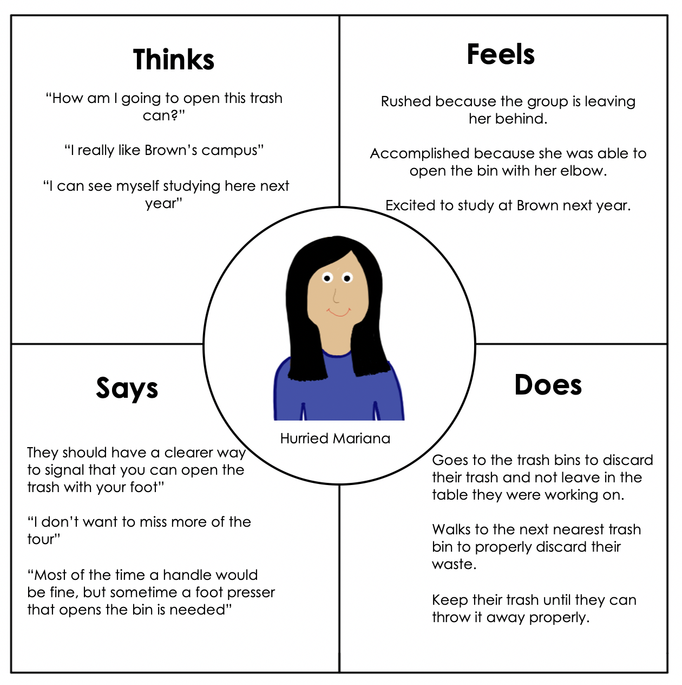

The goal of this project was to pick an interface, observe people using the interface and analyze their actions.
The trash cans around the Brown University campus are there for students,
staff, and visitors to discard their trash properly. It reduces the amount
of trash people leave around campus. There are two bins always adjacent to each other.
One is for regular trash and the other is for recycling. Users approach any of the bins,
open the covering and discard their waste in the correct bin. They have two choices on how
to open the cover, by pulling on the handle or by stepping on the foot press. Moreover, there is
a green light that turnes red indicating the user if the trash bin is about to be full or if it is reaching its
limit soon.
Personas

Context
Behavioral Oservation
- After observing several users use the interface, it is evident that many just choose to dispose all of their trash in the regular trash bin as opposed to separating it into recyclables and non-recyclables.
- Furthermore, it was noticed that most users did not know about the foot press even after using the trash can several times. Thus, they used the handle to open the lid.
- Most users do not pay attention to the limit indicator. They ignore the light and just try to push the trash in or put it in the recycling bin instead.
- Most users walk with the trash in one hand, which leaves them with one free hand to pull on the handle.
- Users often do not wait for the bins to close before walking away.
Data Collection and Analysis
Interviews
Do you find it difficult to open/use? Or confusing?
-
User 1: No, I find them very straightforward.
-
User 2: No, the user interface is easy to comprehend after a first use.
-
User 3: No, but I just found out today that there is a foot press that opens the bin.
How likely are you to follow recycling guidelines?
-
User 1: I usually follow recycling guidelines, but fail a lot of the time.
-
User 2: I have recycled my whole life, so I will follow all guidelines wherever I go.
-
User 3: I always get confused on what I can recycle, so I just recycle plastic.
Do you separate your trash by category?
-
User 1: I do not separate my trash in categories.
-
User 2: I try to separate it into organic and compostable, and recyclables.
-
User 3: I throw most of my trash into one bin.
-
User 1: I try to find a different trash bin, or I stuff it in.
-
User 2: It actually has never happened to me,
but I would just walk around and until I find the next available trash can.
-
User 3: I would check if the recycling bin next to the trash bin is available and would throw my trash there.
What do you think can be improved with the user interface of the trash bins around campus?
-
User 1: I would like for the trash and recycling bins to give a more noticeable signal when it is full. This
is
because now they do have a small light, but sometimes the light is red even if the bin is not full yet and
sometimes it is not even on. I would also make the bins open when they sense movement. This would eliminate
all
contact with the bin and it would be very convenient.
-
User 2: It would be better if the compartment where you put the trash goes back to its normal state faster. I
feel
like sometimes I need to leave quickly, but also want to make sure that my trash was properly disposed and it
takes the lid too long to go back to normal and actually throw the trash inside the bin.
-
User 3: It would be better if they trash bins could have a clearer signal that there is a foot press that will
also open the covering. I feel most people never use it because they do not know it is there. They will just
try
to open the trashcan with their full hands somehow.
How does this trash bins compare to others you have used?
-
User 1: The trash can is very good at containing smell in. I have never encountered one where I open it to
dispose
my trash and could smell the trash. I also like how it requires very little contact to throw away my trash.
Specially now with Covid-19, I do not want to touch surfaces with my hands and the foot press is perfect to
open
it.
-
User 2: I like that it is easy to use. It is very straightforward and does not require much thinking or
processing
to use. I also like that there is a solar panel on the top part of the bins that makes the light that signals
fullness work.
-
User 3: I like that it requires little strength to open. It is also very convenient that it has the recycling
bin
clearly labeled from the regular trash bin. The different colors and symbols in these are essential to let the
user know which is which.
Personas
Model 1:
The user chooses to discard their waste. They looks around for the nearest available trash bin and proceed to
grab trash on one hand. The user then walks over to the trash bins and looks confused. They then try to open the
regular trash bin, but find themselves exerting an abnormal amount of force on the handle. The covering does
open. They then realize that the red light on the side of the bin is turned on, which leads the user to think that
the bin is full. As they grow in frustration, they quickly decide to dispose of their trash in the adjacent
recycling bin and leave.

Frustrated Ale is a student at Brown University. Between his concentrations in Political Science and Economics, clubs, and soccer, Ale’s schedule is busy trying to fulfill requirements and doing what he enjoys. Being the strong athlete he is, he gets easily frustrated when things are hard to open. Also, because of his busy schedule any minor setback in his calendar stresses him out. Ale tries to recycle and follow recycling guidelines as much as he can, but acknowledges that he is not always conscious of doing it.
Model 2:
The user finished eating their to-go meal as they are walking on a campus tour. They have wrappers and a food
container
on one hand and a coffee cup on the other. They wish to dispose of them, so they look around and find the nearest
trash bin. They walk towards it and see that there is only a handle to open the covering. They get desperate as
the tour group is walking away. The user tries to open the covering with their elbow and succeeds but made the
task
unnecessarily hard. They disposes of their trash only to notice that there was a foot press that would open the
covering. They walk away fast and join the tour group again.

Storyboard